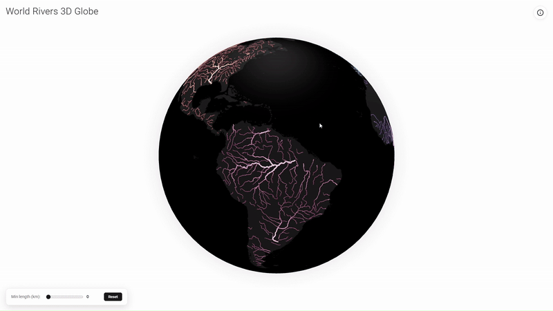
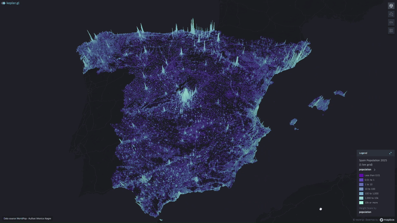
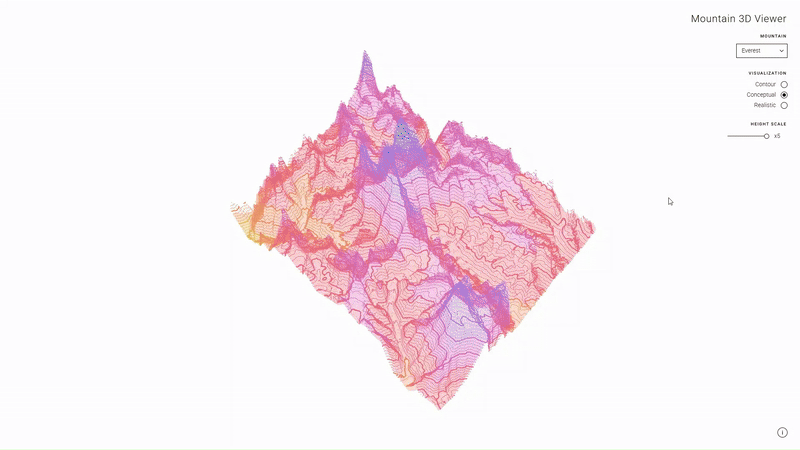
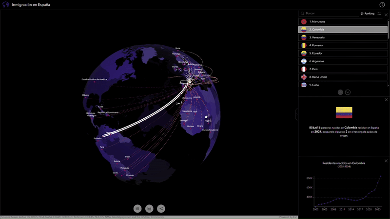
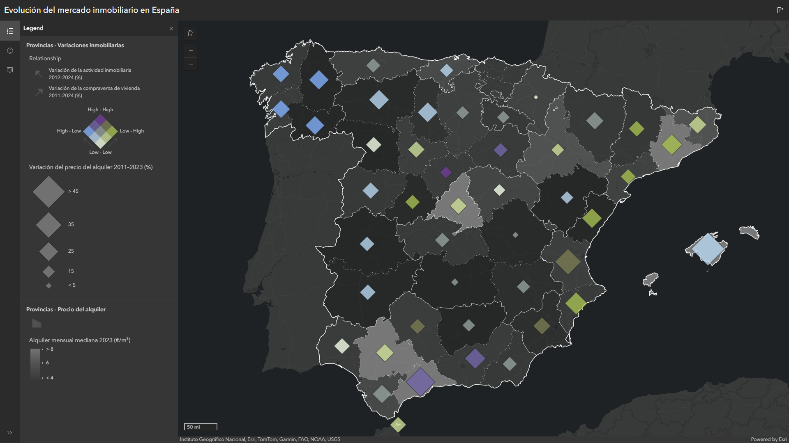
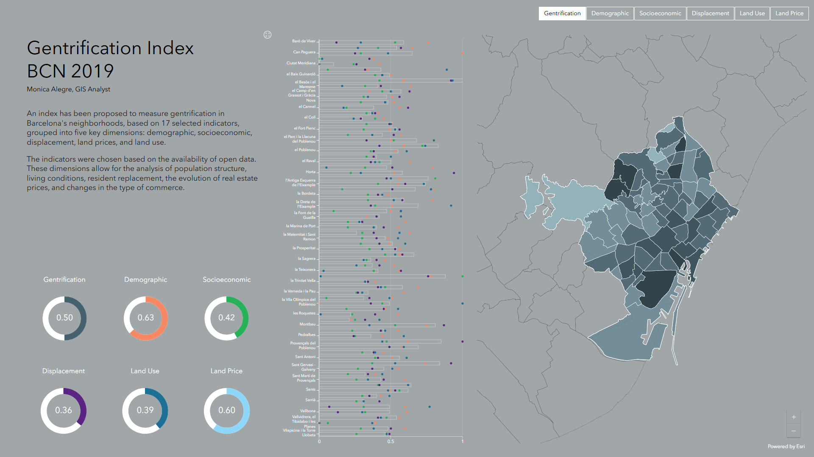
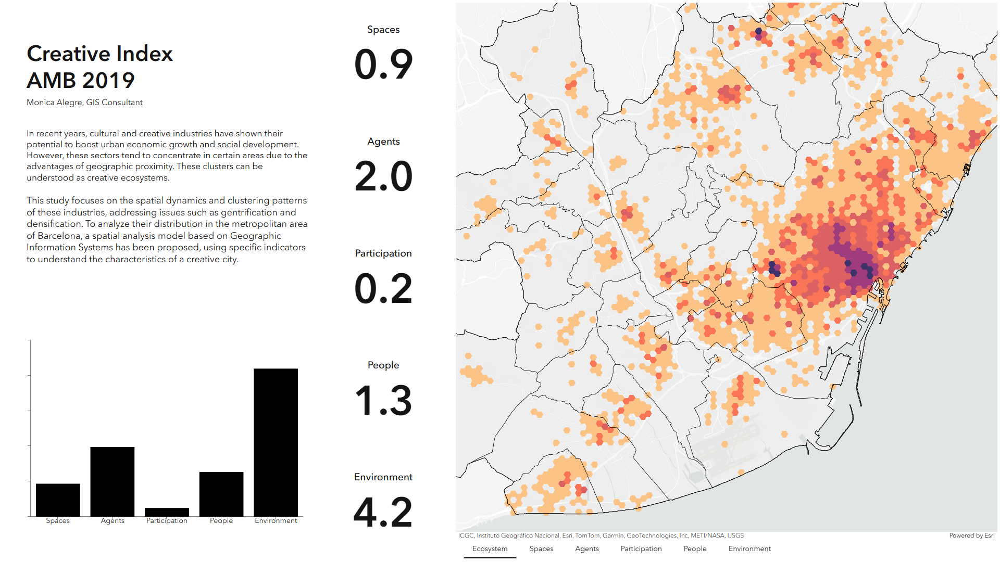

I'm a GIS specialist with a solid technical background in data modeling, geospatial workflow automation, and the creation of interactive maps.
I'm interested in finding new ways to understand territory through data, turning it into visual stories, whether in a dashboard or on a 3D globe.
I'm currently exploring 3D GIS as a more intuitive and expressive way to represent space.
Let's connect on
LinkedIn.
3D globe visualizing the main rivers of the world with interactive information from Wikipedia and Wikidata.
Data: Natural Earth (10 m rivers), NASA Visible Earth basemap, and Wikidata API.
Technologies: Globe.gl (Three.js), Wikidata API, and Wikipedia REST API.
View project
3D visualization of Spain's population distribution for 2025, highlighting density patterns across the territory.
Data: WorldPop (1 km grid).
Technologies: Kepler.gl and FME.
View project
Interactive 3D visualization to explore and compare mountain scale and form. Includes conceptual, contour, and realistic views with adjustable vertical exaggeration.
Data: Copernicus DEM 30 m and Sentinel-2 Cloudless mosaics.
Technologies: Three.js, WebGL, GDAL, and QGIS.
View project
3D interactive globe showing immigration flows to Spain, combining data, graphics, and rankings by country.
Data: Eurostat (Population by country of birth), UN WPP, and ArcGIS Living Atlas geometries.
Technologies: ArcGIS Experience Builder, Scene Viewer, and ArcGIS Pro.
View project
Dashboard analyzing Spain's real estate dynamics from 2011 to 2024 through rental prices, housing sales, and business activity.
Data: MIVAU (SERPAVI), INE (DIRCE), and MITMS (Transaction Statistics).
Technologies: ArcGIS Map Viewer, ArcGIS Pro, and Instant Apps.
View project
Dashboard proposing a gentrification index for Barcelona based on 17 open-data indicators grouped into five dimensions.
Data: Barcelona City Council, INCASOL, Idealista, and Inside Airbnb (2014-2018).
Technologies: ArcGIS Pro and ArcGIS Dashboards.
View project
Dashboard exploring the spatial concentration of creative industries in the Barcelona Metropolitan Area and their relation to urban transformation.
Data: AMB, Gencat, DIBA, IERMB, ICGC, INE, Camerdata, and additional open data (2011-2019).
Technologies: ArcGIS Pro and ArcGIS Dashboards.
View project